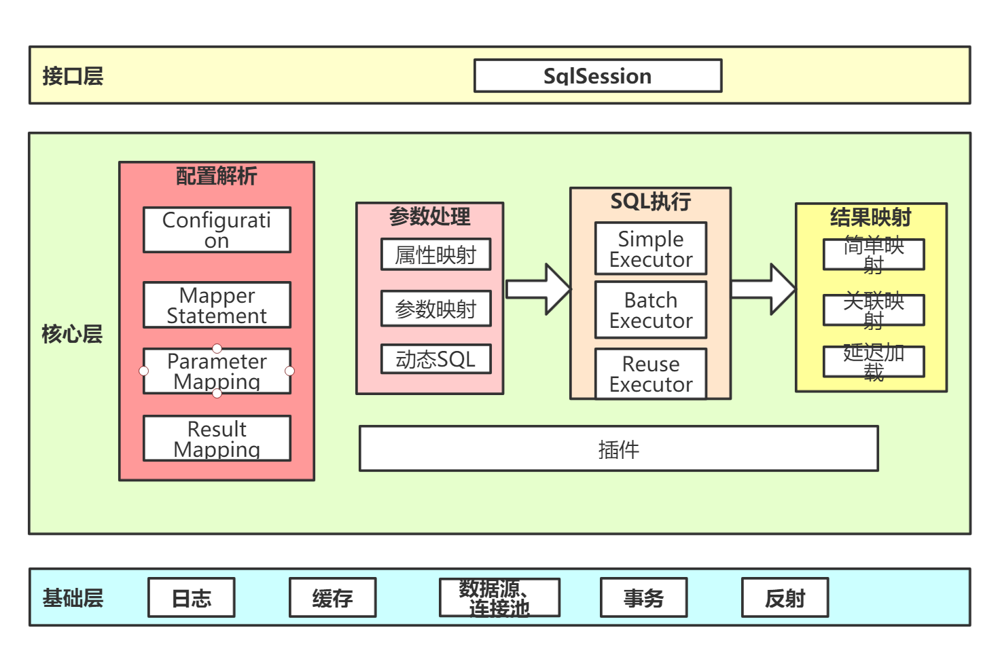

mybatis核心
MyBatis 是一款优秀的持久层框架，它支持自定义 SQL、存储过程以及高级映射。MyBatis 免除了几乎所有的 JDBC 代码以及设置参数和获取结果集的工作。MyBatis 可以通过简单的 XML 或注解来配置和映射原始类型、接口和 Java POJO（Plain Old Java Objects，普通老式 Java 对象）为数据库中的记录
mybatis原理？

mybatis核心对象及其作用？
SqlSessionFactoryBuilder，创建工厂类 SqlSessionFactory，创建会话 SqlSession，提供操作接口 MapperProxy， 代理mapper接口后，用于找到sql执行
mybatis和hibernate的优缺点
相同点
Hibernate与MyBatis都可以是通过SessionFactoryBuider由XML配置文件生成SessionFactory，然后由SessionFactory 生成Session，最后由Session来开启执行事务和SQL语句。
其中SessionFactoryBuider，SessionFactory，Session的生命周期都是差不多的。Hibernate和MyBatis都支持JDBC和JTA事务处理。
不同点
（1）hibernate是全自动，而mybatis是半自动
hibernate完全可以通过对象关系模型实现对数据库的操作，拥有完整的JavaBean对象与数据库的映射结构来自动生成sql。而mybatis仅有基本的字段映射，对象数据以及对象实际关系仍然需要通过手写sql来实现和管理。
（2）hibernate数据库移植性远大于mybatis
hibernate通过它强大的映射结构和hql语言，大大降低了对象与数据库（Oracle、MySQL等）的耦合性，而mybatis由于需要手写sql，因此与数据库的耦合性直接取决于程序员写sql的方法，如果sql不具通用性而用了很多某数据库特性的sql语句的话，移植性也会随之降低很多，成本很高。
（3）hibernate拥有完整的日志系统，mybatis则欠缺一些
hibernate日志系统非常健全，涉及广泛，包括：sql记录、关系异常、优化警告、缓存提示、脏数据警告等；而mybatis则除了基本记录功能外，功能薄弱很多。
（4）mybatis相比hibernate需要关心很多细节
hibernate配置要比mybatis复杂的多，学习成本也比mybatis高。但也正因为mybatis使用简单，才导致它要比hibernate关心很多技术细节。mybatis由于不用考虑很多细节，开发模式上与传统jdbc区别很小，因此很容易上手并开发项目，但忽略细节会导致项目前期bug较多，因而开发出相对稳定的软件很慢，而开发出软件却很快。hibernate则正好与之相反。但是如果使用hibernate很熟练的话，实际上开发效率丝毫不差于甚至超越mybatis。
（5）sql直接优化上，mybatis要比hibernate方便很多
由于mybatis的sql都是写在xml里，因此优化sql比hibernate方便很多。而hibernate的sql很多都是自动生成的，无法直接维护sql；虽有hql，但功能还是不及sql强大，见到报表等变态需求时，hql也歇菜，也就是说hql是有局限的；hibernate虽然也支持原生sql，但开发模式上却与orm不同，需要转换思维，因此使用上不是非常方便。总之写sql的灵活度上hibernate不及mybatis。
（6）缓存机制上，hibernate要比mybatis更好一些
MyBatis的二级缓存配置都是在每个具体的表-对象映射中进行详细配置，这样针对不同的表可以自定义不同的缓存机制。并且Mybatis可以在命名空间中共享相同的缓存配置和实例，通过Cache-ref来实现。
而Hibernate对查询对象有着良好的管理机制，用户无需关心SQL。所以在使用二级缓存时如果出现脏数据，系统会报出错误并提示。
总结
（1）两者相同点 Hibernate和Mybatis的二级缓存除了采用系统默认的缓存机制外，都可以通过实现你自己的缓存或为其他第三方缓存方案，创建适配器来完全覆盖缓存行为。
（2）两者不同点 Hibernate的二级缓存配置在SessionFactory生成的配置文件中进行详细配置，然后再在具体的表-对象映射中配置是那种缓存。而MyBatis在使用二级缓存时需要特别小心。如果不能完全确定数据更新操作的波及范围，避免Cache的盲目使用。否则，脏数据的出现会给系统的正常运行带来很大的隐患。
mybatis的缓存原理
mybatis有两级缓存，一级缓存和二级缓存。
- 一级缓存是会话级别的，默认开启，维护在BaseExecutor中。
- 二级缓存是namespace共享，需要在Mapper.xml中开启，维护在CachingExecutor中。
mybatis三种执行器的区别？
- SimpleExecutor，使用后直接关闭Statement
- ReuseExecutor，放在缓存中，可复用：PrepareStatement
- BatchExecutor，支持复用而且可以批量执行update()，通过
ps.addBatch()实现handler.batch(stmt)
Mybatis支持哪些数据源类型？
UNPOOLED：不带连接池的数据源 POOLED：带连接池的数据源，在PooledDataSource中维护PooledConnection JNDI：使用容器的数据源，比如Tomcat配置了C3P0 自定义数据源：
关联查询的延迟加载是怎么实现的？
动态代理，在创建实体类对象时进行代理，在调用对象的相关方法时触发二次查询。
Mybatis翻页的方式和区别？
- 逻辑翻页：通过RowBounds对象，在内存中分页，占用内存高，性能低下。
- 物理翻页：通过改写sql，可用插件拦截Executor实现。占用内存低，性能高。
Mybatis如何集成到spring的？
- SqlSessionTemplate中有内部类SqlSessionInterceptor对DefaultSqlSession进行代理；
- MapperFactoryBean继承了SqlSessionDaoSupport获取SqlSessionTemplate；
- 接口注册到IOC容器中的beanClass是MapperFactoryBean
DefaultSqlSession和SqlSessionTemplate的区别？
SqlSessionTemplate是线程安全的。
1）为什么 SqlSessionTemplate 是线程安全的？
其内部类 SqlSessionInterceptor 的 invoke()方法中的 getSqlSession()方法： 如果当前线程已经有存在的 SqlSession 对象，会在 ThreadLocal 的容器中拿到SqlSessionHolder，获取 DefaultSqlSession。 如果没有，则会 new 一个 SqlSession，并且绑定到 SqlSessionHolder，放到ThreadLocal 中。 SqlSessionTemplate 中在同一个事务中使用同一个 SqlSession。 调用 closeSqlSession()关闭会话时，如果存在事务，减少 holder 的引用计数。否则直接关闭 SqlSession。
2）在编程式的开发中，有什么方法保证 SqlSession 的线程安全？
SqlSessionManager 同时实现了 SqlSessionFactory、SqlSession 接口，通过ThreadLocal 容器维护 SqlSession
mybatis中的设计模式
- 工厂模式：SqlSessionFactory
- 单例模式：SqlSessionFactory，Configuration
- 建造者：SqlSessionFactoryBuilder，XMLConfigBuilder、 XMLMapperBuilder、 XMLStatementBuidler
- 装饰者模式：
- CachingExecor simple reuse batch三种exector的装饰，
- LRUCache FifoCache对PerpetualCache的装饰
- 代理模式：
- 绑定： MapperProxy
- 延迟加载： ProxyFactory（CGLIB、 JAVASSIT）
- 插件： Plugin
- Spring 集成 MyBaits： SqlSessionTemplate 的内部类 SqlSessionInterceptor
- MyBatis 自带连接池： PooledDataSource 管理的 PooledConnection
- 日志打印： ConnectionLogger、 StatementLogger
- 模板方法：Executor，BaseExecutor,SimpleExecutor
- 责任链模式：InterceptorChain，插件拦截器链